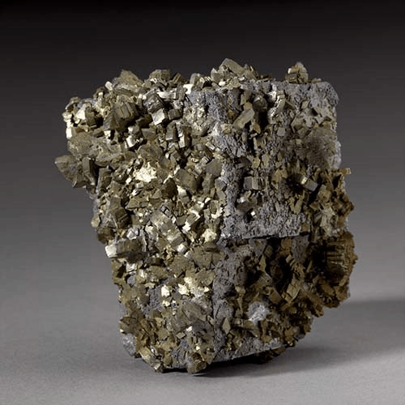
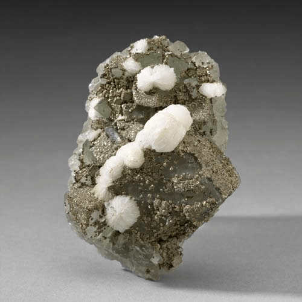
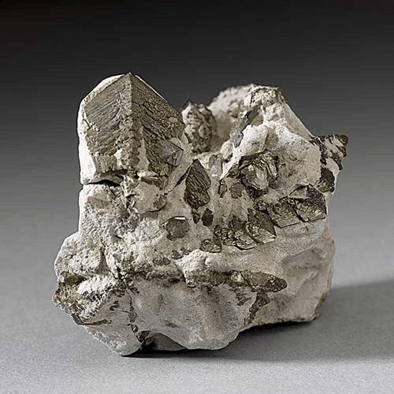

Marcasite - FeS2
Sulfides




Habit: Crystals common, typically tabular or pyramidal, also stalactitic, globular or reniform, with radiating internal structure. Silvery-yellow to pale-brass yellow crystals, tending towards light green. Metallic Luster, opaque.
Environment: Typically formed under low-temperature conditions, in sedimentary environments (shales, limestones, and low rank coals), often as concretions or replacing fossils and in Hydrothermal veins
Etymology: A word of Arabic or Moorish origin, applied to minerals that had an appearance to pyrite